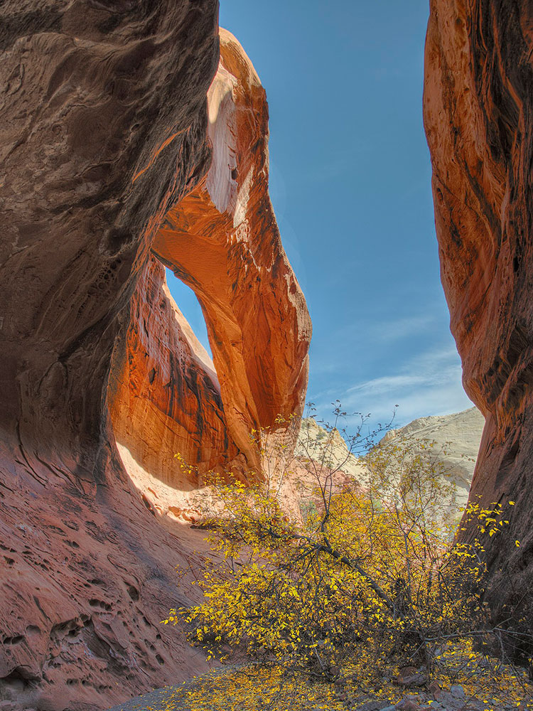
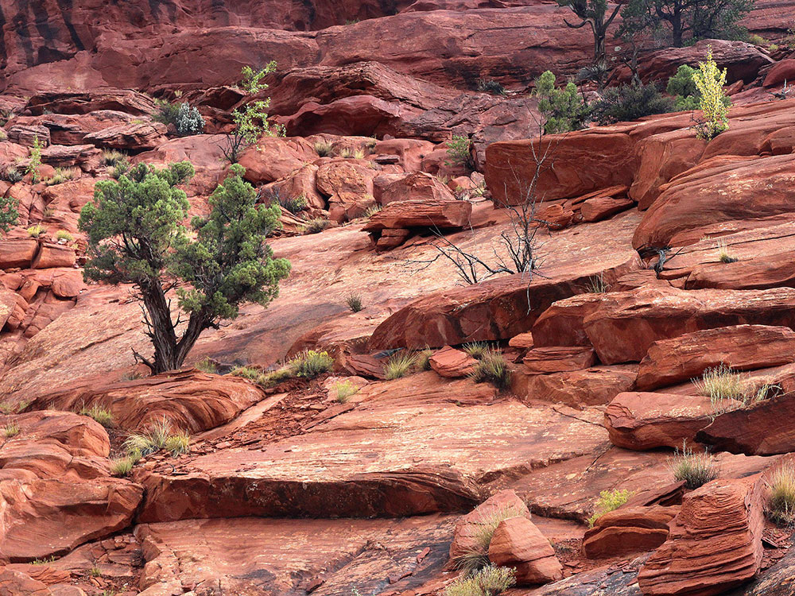

Remote backcountry canyon system featuring narrow sandstone passages, expansive slickrock benches, natural arches, towering cliffs, and sweeping views of a folded desert landscape.
General Information
Lower Route: Approximately 16.5 miles round trip
Lower Route: Approximately 1,500 feet cumulative
Most hikers begin during daylight hours
Summer temperatures can be extreme and flash floods are possible from July through September
Private Vehicle: $20
Motorcycle: $15
Pedestrian/Cyclist: $10
Backcountry permits required for overnight trips
How to Get There
From Torrey (30 mi): Take UT-24 east through Capitol Reef National Park, turn south onto Notom-Bullfrog Road, continue to Burr Trail Road, and follow signs to the Upper or Lower Muley Twist trailhead access roads.
Overview
Muley Twist Canyon cuts along the spine of the Waterpocket Fold in Capitol Reef's south end, with the Upper and Lower canyons offering some of the park's best backcountry hiking, through winding narrows, slickrock, and arches. They are not maintained trails, so conditions change with floods and rockfall.
Top Routes
| Route | Length | Difficulty | Highlights |
|---|---|---|---|
| Upper Muley Twist Canyon loop | 9 miles round trip from Strike Valley Overlook parking (14.8 from the Burr Trail road) | Strenuous | Saddle Arch, the narrows (2.3 miles past Saddle Arch), and a rim route with views of the Waterpocket Fold; the loop portion is 5.6 miles |
| Strike Valley Overlook | 0.8 mile round trip | Easy | A view of the Waterpocket Fold's folds |
| Lower Muley Twist Canyon | About 17 miles one way to The Post | Strenuous | A deep, twisting canyon with alcoves and Hamburger Rocks; a car shuttle is needed |
Trailhead Locations
The Upper Muley Twist Canyon Road is located one mile (1.6 km) west of the top of the Burr Trail Road switchbacks. Passenger cars can usually be driven about 0.3 mile (0.5 km) in to the Upper Muley Twist Canyon trailhead. High-clearance vehicles, typically requiring four-wheel drive, can drive 2.9 miles (4.7 km) up the canyon to the Strike Valley Overlook parking area.
Hike Description
From the Strike Valley Overlook parking area, it is an easy 1.7 mile (2.7 km) walk up the wash to Saddle Arch where a sign indicates the rim route. The loop portion of the Upper Muley Twist Canyon hike begins here and can be done in either directions. Hiking clockwise, beginning with the canyon portion and returning via the rim route, will offer a more gradual climb. Beginning with the rim route and hiking in a counterclockwise direction will get the most strenuous part of the hike over at the beginning. The loop is cairned but requires careful attention as some sections of the trail deviate from the anticipated route to bypass obstacles. To access the rim route and hike the loop in a counterclockwise direction, leave the wash near Saddle Arch and follow the cairned route on the right (east) side of the canyon to the top of the Fold.
To follow the loop in a clockwise direction, continue up the canyon in the wash. The narrows are 2.3 miles (3.7 km) beyond Saddle Arch. Cairns mark a route around the narrows on the right (east) side of the canyon. It is easy to miss this bypass route if you are not watching for cairns. It is possible to explore the narrows, but a pour-off near the beginning requires a difficult climb using old hand- and toe-holds carved into the rock. The narrows end at an impassable pour-off where water can sometimes be found. Large letters painted on the rock wall mark one corner of an old uranium-mining claim.
A short distance up the canyon from the point where the narrows bypass trail drops back into the wash bottom, an NPS-placed sign marks the point where the trail climbs out of the canyon to the rim. At this point you can continue back to Saddle Arch along the rim route or return the way you came. At the sign, the trail turns east and requires a steep climb and some scrambling to reach a second sign that marks the upper end of the rim route. The rim route involves some scrambling over steep, exposed slickrock and can be a little tricky when carrying a backpack. Use caution, especially if wet or icy conditions exist. The route along the rim is cairned. Three-quarters of a mile (1.2 km) from the upper (north) end of the rim route you will cross a short, steep notch in the crest of the ridge. One mile (1.6 km) farther, shortly after traversing another saddle in the ridge, you will climb up over steep slickrock ledges to get back on top of the rim. Stay near the right (west) edge and watch for cairns leading over this obstacle. As you approach the lower (south) end of the rim route, watch for an NPS-placed sign directing you right (west) to the route that drops back down to the canyon bottom. The rim is fairly wide in this area, and it's easy to miss the route down if you aren't watching for cairns. Back in the canyon bottom, retrace your route 1.7 miles (2.7 km) down the wash to the parking area.
Route Distances
- Upper Muley Twist Canyon trailhead (at Burr Trail Road) to Strike Valley Overlook parking area: 2.9 miles (4.7 km)
- Strike Valley Overlook trail (one-way from parking area to viewpoint): 0.4 mile (0.6 km)
- Strike Valley Overlook parking area to Saddle Arch: 1.7 miles (2.7 km)
- Saddle Arch to start of narrows: 2.3 miles (3.7 km)
- Start of narrows to rim route (upper access): 0.6 mile (1.0 km)
- Saddle Arch to upper end of rim route (via rim): 2.7 miles (4.3 km)
- Total distance of loop portion of route: 5.6 miles (9.0 km)
- Total round-trip from Strike Valley Overlook parking area: 9.0 miles (14.5 km)
- Total round-trip from Upper Muley Twist Canyon trailhead (at Burr Trail Road): 14.8 miles (23.8 km)
Lower Muley Twist Canyon
The highlight of the hike is a deep, narrow, twisting canyon with large alcoves. The canyon offers many opportunities for side trips and exploring. From 1881 to 1884, the canyon served as a wagon route for Mormon pioneers traveling south toward San Juan County. The canyon was though to be narrow enough to "twist a mule," hence the name Muley Twist. The Post cutoff trail is marked with rock cairns and signs, but carrying a topographic map is recommended.
Beginning at the trailhead on the Burr Trail Road and hiking down-canyon to The Post trailhead via The Post cutoff trail necessitates leaving a vehicle at each end. If you don't have two vehicles, turn around when you get to the sign indicating The Post cutoff trail. A hike though the Lower Muley Twist Canyon can be done as a long day hike or as an overnight trip by starting and ending at The Post parking area. Hiking the entire canyon from the trailhead on the Burr Trail Road and back is best done as a two- to three-day trip. Backcountry permits are required for all overnight trips and can be obtained at the visitor center.
From the south end of Lower Muley Twist, a side trip to the south offers a view of Hamburger Rocks. These are small, dark-red hoodoos within the Navajo sandstone with hamburger-like shapes. The white-colored slope they are perched on accentuates the rocks. The spur route to Hamburger Rocks is unmarked.
This route is not an official, maintained trail. Route conditions, including obstacles in canyons, change frequently due to weather, flash floods, rockfall, and other hazards. Routefinding, navigation, and map-reading skills are critical. Do not rely solely on unofficial route markers (rock cairns, etc.); they are not maintained by the National Park Service (NPS), may not indicated the route in this descriptions, or may be absent.
Trailhead Locations
Top of the Burr Trail Road switchbacks, 35 miles (56.3 km) south of Hwy 24 (2.1 miles {3.4 km} west of the Notom-Bullfrog Road/Burr Trail Road junction). The Notom-Bullfrog Road is hard-packed dirt and is usually passable to passenger cars. At times, the Burr Trail Road may require a high clearance vehicle.
The Post Corral parking area: from the Burr Trail Road/Notom-Bull Frog Road junction, travel 2.2 miles (3.6 km) south on the Burr Trail Road, then 0.5 mile (0.9 km) to an old corral at the end of a short spur road.
Route Distances
- Burr Trail Road trailhead to the Post Cutoff Trail: 3.8 miles (6.2 km)
- The Post Cutoff Trail to the Post trailhead, one-way: 2.1 miles (3.3 km)
- Burr Trail Road trailhead to Halls Creek drainage: 12.4 miles (20.0 km)
- Junction of Lower Muley Twist and Halls Creek drainage to the Post trailhead: 4.7 miles (7.6 km)
- Total mileage for upper loop (Burr Trail Road trailhead to the Post Cutoff Trail and return via the Burr Trail Road): 10.7 miles (17.4 km)
- Total mileage for lower loop (from the Post trailhead and back): 15.4 miles (24.8 km)
- Total mileage for entire loop Burr Trail Road trailhead to Halls Creek drainage and return via the Burr Trail Road: 21.9 miles (35.5 km)
- Total mileage for entire loop: Burr Trail Road trailhead to Halls Creek drainage and return via the Post Cutoff Trail: 22.8 miles (36.9 km)
Burr Trail Road trailhead to the Post Cutoff Trail
Lower Muley Twist Canyon cuts lengthwise along the spine of the Waterpocket Fold creating a colorful, meandering canyon. From the trailhead located on the Burr Trail Road, the route drops quickly into the canyon. A short section of narrows is located approximately two miles (3.2 km) south of the trailhead. The canyon walls on the east side are composed of white Navajo sandstone streaked with black desert varnish. The rust colored walls are the Wingate and Kayenta layers. 3.8 miles (6.2 km) south of the trailhead, a sign marks the "Post Cutoff Trail." This is a good place to turn back if you are on a day hike. If you left a second vehicle at the Post Corral parking area, continue east 2.1 miles (3.3 km) via the cutoff trail.
The cutoff trail climbs up and over the Waterpocket Fold, providing panoramic vistas. Sections of the trail traverse steep slickrock with loose footing and exposure in several places. Use caution, especially on a particularly-exposed 100-foot (30 m) section, and especially if wet or icy conditions exist. If you are continuing into the lower portion of the canyon, follow the directions in the next section.
If you are starting from the Post Corral, the cutoff trail heads west from the parking area and climbs steeply up the Waterpocket Fold, providing panoramic vistas. Sections of the trail traverse steep slickrock with loose footing and severe exposure in several places. Use caution, especially on a particularly-exposed 100-foot (30 m) section, and especially if wet or icy conditions exist. A sign marks the point where the Post Cutoff Trail joins Lower Muley Twist Canyon. Continuing left (south), large alcoves highlight this portion of the canyon. Here the Kayenta formation has been undercut, forming high overhangs. The canyon continues south for over 8 miles 912.9 km). Near the end of Lower Muley Twist is a high alcove, after which the canyon turns toward the east and becomes very narrow with high walls. At this point the high cliffs of Big Thomson Mesa are visible ahead. As you exit the canyon, look carefully for cairns on the left (north) side of the wash which mark a route out of the drainage and over a low ridge to the northeast. This route connects with Halls Creek drainage and saves hiking time. If you stay in the Lower Muley Twist drainage, the route connects with Halls Creek drainage in approximately 0.5 mile (0.8 km). The side trip to Hamburger Rocks begins at this point (see below). To return to the Post Corral parking area, follow the remnants of an old road north in the main canyon for 4.7 miles (7.6 km). If you left a vehicle at the Post, your hike is over.
If your vehicle is parked at the Burr Trail Road trailhead, you can either walk the Burr Trail Road north and then west up the switchbacks (4.8 miles [7.7 km]) or return via the Post cutoff trail and through the upper portion of Lower Muley Twist Canyon (5.9 miles [9.5 km]).
If you begin your trip be hiking south from the Post parking area along the Halls Creek drainage (Grand Gulch), it is easy to miss the route into Lower Muley Twist Canyon. Track your location on a topographic map and scan the steep slickrock slopes of the Fold for the upper portion of the north-facing wall of Lower Muley Twist Canyon. The wall is stained with desert varnish and is visible a good distance away. Stay in the Halls Creek drainage until you encounter the entrance to Lower Muley Twist Canyon further downstream. Follow Lower Muley Twist Canyon north until you reach the Post cutoff trail or continue up canyon to the trailhead on the Burr Trail Road, depending on your destination.
Side trip to Hamburger Rocks
From the confluence of Lower Muley Twist Canyon and the Halls Creek drainage, hike south on the remnants of an old road for about 0.7 mile (1.1 km) to a sign marking the spur road to Muley Tanks, which are on the right (west) and above the wash at the base of the Fold. (Hamburger Rocks are located low on the Fold about 200 yards [183 m] south of this point). Continue south on the main route another 0.2 mile (0.4 km) past the Muley Tanks sign to a sandy wash crossing. Turn right (west) and eventually climb a broad slope of white Navajo sandstone until the dark-red Hamburger Rocks from into view (about 1/4 mile [0.4 km] above the main route). Return via the same route.
From the Post parking area, you can hike directly to Hamburger Rocks by following the Halls Creek drainage to the south. You will pass the narrow cut into Lower Muley Twist Canyon after 4.7 miles (7.6 km). Hamburger Rocks are approximately 1 mile (1.6 km) beyond this point. Follow the directions in the previous paragraph.
Round-trip distance for the side trip from the Lower Muley loop route to Hamburger Rocks is 2.3 miles (3.6 km).
Total round-trip distance from the Post parking area to Hamburger Rocks via Halls Creek is 11.7 miles (18.8 km).
This article uses material from nps.gov "Capitol Reef National Park"



.jpg){kind=link}